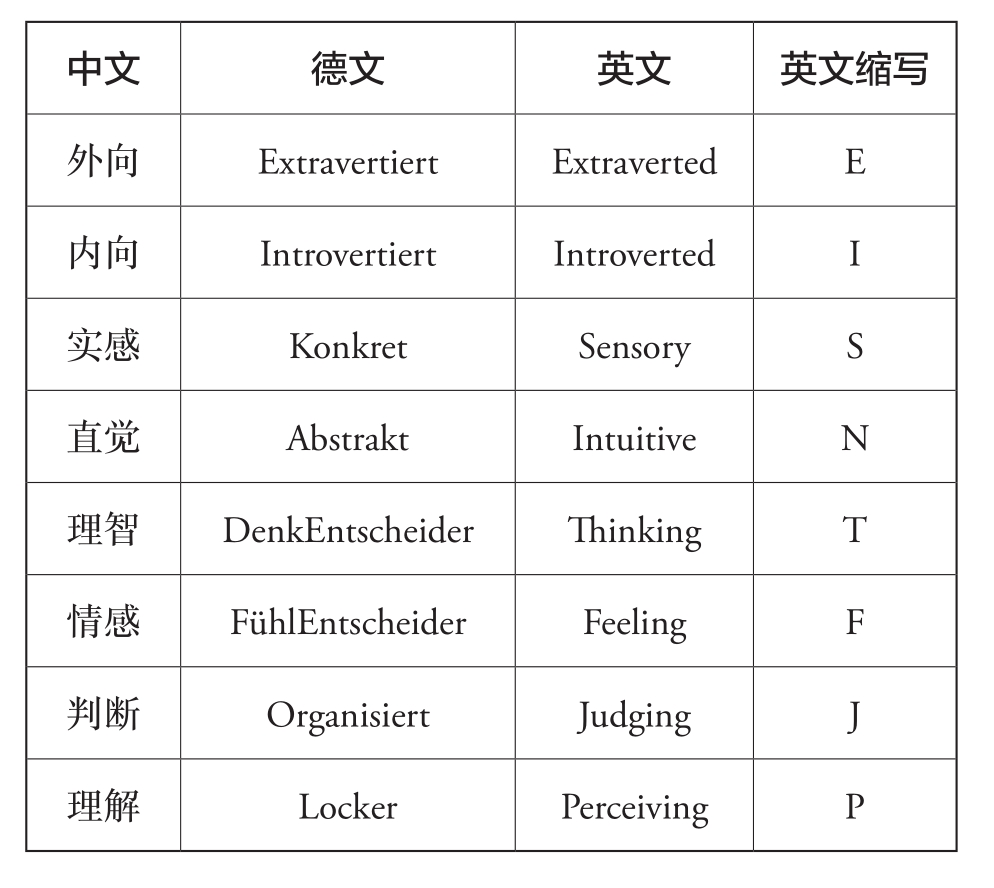

分析性格似乎是人类娱乐的最高形式。
MBTI 理论基础一、四个心理维度二、外向还是内向？如何与外向型打交道？如何与内向型打交道？三、直觉还是实感？如何与直觉型打交道？如何与实感型打交道？四、情感还是理智？如何与情感型打交道？如何与理智型打交道？五、判断还是理解？如何与判断型打交道？如何与理解型打交道？六、不仅仅是四个字母七、和谐共处的小说明书

Extroverted [ˈekstrəvɜːtɪd] 外向的
Introverted [ˈɪntrəvɜːtɪd] 内向的
Sensory [ˈsensəri] 实感的
Intuitive [ɪnˈtjuːɪtɪv] 直觉的
Thinking [ˈθɪŋkɪŋ] 理性的
Feeling [ˈfiːlɪŋ] 感性的
Judge [dʒʌdʒ] 判断，评审
Perceive [pəˈsiːv] 理解，察觉
大多数人在每个维度上都倾向于一种或另一种表现，表现的强度因人而异。有些人会在某个维度上处于中间位置，但是大多数人具有非常明显的类型特征。关键是要明白，没有人会只以外向或内向的方式行事，只以实感或直觉的方式感知，只以理智或情感导向的方式做出决定。在每个维度上，我们总是有两种表现，但大多数人都倾向于不自觉地偏爱其中一种。这就是为什么人们也在类型理论中谈到倾向或偏好。这类似于用手的习惯：大多数人习惯用右手或左手，但也使用另一只手，只不过用得少。类型理论假设这些倾向是与生俱来的，并且在一个人的发展过程中很早就定型了。当然，环境也会影响一个人发展其先天倾向的强度。父母的行为可以抑制或促成孩子某些个性的发展，但是永远无法完全改变孩子的发展方向。教育的影响是有限的。
四个维度，即一个人在每个维度上的表现，决定了我们喜欢什么、不喜欢什么。它们提供了大量关于一个人的行为、思想和情感模式的信息。每个人在每个维度上都倾向于一种表现，因此有4×4种不同的组合可能性。由此得出16种可能的组合，每一种对应一种特定的人格类型，即16种人格类型。
如果你不知道外向者在想什么，那你就没有在听！
如果你不知道内向者的想法，你不能问吗？！
心理学家荣格观察到人可以获得能量的两个基本来源：外部世界或内心生活。荣格将这两种基本来源称为对外导向和对内导向。荣格的观察在今天仍然有效——关于外向和内向的主题有大量的心理学研究。
很少有人非常外向或非常内向，两者之间有很多层级，有些人几乎处于完全中间的位置。近来，这被称为“居中”。外向或内向的人格特质大约有90%是由遗传决定的。
外向的人需要大量的外部刺激才能感到兴奋，他们从世界和与人的接触中补充能量。他们不喜欢独处，外部的宁静会让他们很快感到无聊和刺激不足。外向的人喜欢活动，通常有行动的意愿。
反之，内向的人会从内心生活获得很多刺激。他们反思、阅读、看电影，忙着处理心里的事。相对于外向者，他们需要的外部输入少得多，而且很快就会感到刺激过度。他们也喜欢待在人群中，但时不时地需要外部的宁静和内心的平静来给自己充电。
外向或内向是与生俱来的，所以“改造”的空间不大。因此，可以观察到：外向的孩子会迅速而大胆地融入外界——他会去操场和其他人一起玩，他与人社交的进展很快，父母经常警告他不要太相信任何人；内向的孩子则会先在边上观察，然后才和别人一起玩——也许吧，父母经常鼓励他多与他人接触。
内向的孩子永远不会被培养成冒失鬼，哪怕（外向的）父母是最好的榜样。外向的孩子永远不会几个小时默默地埋头读书，哪怕他的（内向的）父母会全情投入地这样做。然而，正因为这些特征是由遗传决定的，所以父母双方都与孩子的类型表现不同的情况很少发生。与我们将考虑的其他人格特质一样，重要的是要注意：
人格特质是天生的。你选不了！
一种不比另一种好或坏！两者都有其优点和缺点。
外向的人和内向的人大脑的工作方式不同。交感神经和副交感神经是自主神经系统的两个主要对手，这个系统自主运行且只能在有限的范围内受到影响。
交感神经可以说是活跃的神经，它的目标是行动，为身体做好战斗和逃跑的准备。副交感神经是静息神经——它确保身体的再生和休息。交感神经的信使物质（神经递质）是多巴胺，副交感神经的信使物质是乙酰胆碱。外向型（外向的人）由交感神经主导，而内向型（内向的人）更取决于副交感神经。相应地，外向型需要更多的多巴胺才能感到精力充沛和兴奋。多巴胺水平过低时，无聊会让他们感到压力。他们比内向型有更多“行动”的冲动。他们喜欢社交、冒险、有事情做——只要发生点什么。反之，当内向型的乙酰胆碱水平太低时，即输入和“行动”太多时，他们会感到烦躁。
多巴胺释放量增加也会激活外向型的大脑奖励中心（伏隔核）。这意味着，外向型会因为未来将有所回报而努力。他们的大脑渴望刺激。美食、性爱、酒精、收益、职业成功会释放多巴胺，为了感到愉悦，他们比内向型更急需这种物质。为了获得渴望的回报，外向型也愿意冒险。“不入虎穴，焉得虎子”是外向型的典型格言。这有利也有弊，冒险的勇气会让他们收获很多，但如果行动过于草率，也会损失很多。他们喜欢快速行动，然而，这有时会导致他们对待事和人过于敷衍。这一点，再加上愿意冒险，可能会让他们犯下大错。积极的一面是他们拥有勇气和行动力，灵活且适应性强。
一般来说，外向型——多巴胺所决定的，往往比内向型更快乐、热情和亢奋。然而，他们也比内向型更冲动。在压力下，这甚至会激化为攻击性。这是对他们不利的一面。
外向型总体上比忧心忡忡的内向型更大胆，因此，只要认为有必要，他们不会回避对抗。他们比喜欢和谐的内向型更容易与人发生冲突，因此也更自信。这使他们更容易“为自己说话”，即他们可以很好地表达自己的意愿。一般来说，外向型通常（从积极的意义上说）是很好的自我表达者和舞台人。
然而，他们必须小心，不要在与世界的拥抱中耗尽全力。他们往往不易自省，总是因外界的事物而分心，也任其蒙蔽双眼。在这种情况下，外向型也可能会令人非常疲惫：他们只谈论自己，很少倾听，并且表现得强势且以自我为中心。在消极的情况下，他们表现自己的能力会异变为令人讨厌的自编自演。
在内向型的大脑中，奖励中心的作用不如杏仁核重要。杏仁核是恐惧中心。因此，内向型首先需要一种安全感和稳定感才能感到舒适。然而，由于更容易害怕，他们对于外界的信息也更加警觉、小心。他们是精确的观察者，由于这些品质，他们的确比倾向于无忧无虑的外向型更少发生意外。因此，内向型需要与世界保持一定的安全距离。他们是相当安静的同伴，他们让自己的能量在内心发挥作用。
他们常常陷入思考，别人很难知道他们的内心正在想些什么。他们会小心谨慎地度过一生。内向型比外向型更容易被冥想所吸引。他们相对更容易沉浸在自己的世界里，而这会让外向型很快就感到焦躁和无聊。
当内向型对某事感兴趣时，他们会花几个小时集中注意力并完全投入其中。那时，他们不需要别人——有时几天都不需要。总的来说，他们不怎么依赖外界。他们享受自己的私人空间，如果没有足够的时间独处，他们就会变得焦虑。因为他们有能力持久地做一件事，所以他们中的一些人能接受极好的基础教育，并且/或者是一个或多个领域的专家。外向型也可能受过良好的教育并拥有出色的专业知识，但他们并不适合安安静静地把一件事做上几个小时。很多内向型还喜欢写作，他们更容易在写作中表达他们深刻的思想和丰富的内心世界。因此，许多（当然不是全部）作家都是内向的。
内向型不愿意说个人的感受和想法，最多只与亲密的朋友聊一聊。但如果是他们感兴趣的话题，他们就会很乐意讲，而且滔滔不绝。有时，内向型并不像我们认为的那样，比外向型更害羞或更胆怯，他们只是没有那么强的倾诉冲动。然而，因为他们的焦虑水平很高，所以他们比外向型更容易害羞和社恐。内向型可能有迷失在内心世界的风险，会沉迷于白日梦、幻想和不切实际的理论，从而忽略对现实的把握。与非常内向的人交谈会比较艰难，他们的回避有时使其显得很孤僻，甚至是傲慢。
俗话说“异性相吸”，外向型和内向型在选择伴侣时往往被彼此吸引。
艾瑞克和英格尔在银行工作时相识。英格尔很欣赏艾瑞克在与客户和同事打交道时表现出的迷人的开放态度。她觉得他轻松、自信的风度和他平时散发出的好心情非常有吸引力。他让她觉得谈话很轻松，因为他爱说，话也多，不会像她的某些熟人那样，说着说着就尴尬地冷场了。
艾瑞克觉得英格尔安静的性格很有吸引力。英格尔是一个很好的倾听者，当她说些什么时，总是深思熟虑过的。她的独立让他着迷。她很少和同事一起喝咖啡、聊八卦，也很少和大家一起吃午饭。她可以一个人就很自在，但又不会显得孤僻或不友好。
艾瑞克和英格尔相爱了。在他们恋爱的第一年，双方都非常努力地取悦对方。然而，他们不同的关系需求逐渐浮出水面。艾瑞克有很多朋友和熟人，他喜欢社交，总是在寻找娱乐。英格尔喜欢独自或与艾瑞克一起宅在家里，偶尔才邀请亲密的朋友过来吃饭。他们去参加聚会，到了后半场，当艾瑞克还在忙得不可开交时，她会抱怨说她想回家。
他们吵得越来越频繁，艾瑞克指责英格尔是一个“扫兴的女人”，没法从自己的世界里走出来。英格尔会说，他的争强好胜让她厌恶。英格尔吵架时将自己“关闭起来”并缩到“她的墙后面”，而不是解决问题，这也让艾瑞克发疯。反过来，英格尔经常觉得艾瑞克咄咄逼人。和他讨论的时候，她几乎没有时间思考。不知从什么时候起，他们发现对方并不是“固执和不可理喻”，只是艾瑞克外向而英格尔内向。
从那时起，他们就能够更好地理解和尊重彼此的差异性。他们已经安排了固定的时间，在那些天的晚上，他们会一起待在家里。之后，艾瑞克常单独和朋友们出去玩，而英格尔则喜欢在那些晚上独处。在派对上，当英格尔想回家时，就自己打车回去。当存在意见分歧时，艾瑞克也明白了，英格尔先需要时间思考。他们约定第二天再说。
与典型的性别偏见（女性说话不过脑，而男性需要自己处理所有事情）相反，外向和内向的人格特征与性别无关，并且在女性和男性中分布大致相等。“讲话是银，沉默是金。”这句谚语只能由内向的人发明。对于外向的人来说，这句话荒谬至极：“有话不直说，对不起自己！”
问一个外向型一个问题，他会马上回答，有时你还没问完，他就开始回答了。问一个内向型一个问题，他会先想一下（或更长时间）再答。外向型有能力“大声思考”，有时他们一股脑儿地说出来的话连他们自己都惊讶，无论是好是坏。内向型在说话之前则需要清楚他们想说什么。
与此相关的是，当内向型处理困难的问题时，如个人问题——他们必须自己先理解，然后才能谈论。这是外向型和内向型之间的一个常见的误解：外向型敦促他们内向的伴侣更开放、更自发地表达感受和想法，而内向型则因为觉得自己做不到而感到压力。这就是为什么要给内向型足够的时间和空间，这样他就能自我思考，并整理感受和想法。可以说，外向型用语言表达思维过程，而内向型用语言表达结果。
外向型和内向型处理个人问题的方式也不同，外向型心直口快。如果他有烦恼，就会和朋友说。
伊丽莎白失恋了。她内向的朋友伊莎贝尔建议她一个人去海边玩几天。在那里，她可以一个人待着，出去散步，对自己好一点——休息一下。对于外向的伊丽莎白来说，这几乎是被放逐到地狱里了——起码她在那儿要有人陪伴！没有什么比一个人更糟糕的了，现在她最需要的是能倾诉心声的朋友。
很多外向型自责自己太不擅长独处，他们觉得自己过于依赖社交和外部刺激，希望能像内向型那样独立和深沉。反过来，内向型则羡慕外向型的从容和口才。
外向型和内向型的工作风格也不同。内向型可以沉浸在一件事中好几个小时，以至于他们周围的世界都消失了。他们关上办公室的门，不想被打扰。外向型更喜欢处理各种任务，他们喜欢开着办公室的门，随时知道还有什么事发生。在集中精力独自工作一段时间后，他们渴望在现实中或在网络上营造短暂的社交休息时间。一般来说，外向型更喜欢做与人接触的工作，内向型更喜欢做可以自己完成的工作。
你一定在阅读时想过，试图确定你是更外向还是更内向。重要的是，这不是两种完全相互排斥的人格特质。你可以把外向—内向维度想象成从50℃到-50℃的温度计。这意味着，有些人非常明显外向或内向（拿温度打比方，大概是±45℃），但两者之间可能有许多等级。有些人几乎处于中间状态，外向和内向的行为几乎一样多。无论更倾向于什么，我们总是有相反的一面。也就是说，每个内向的人都会经历外向的时刻。反之亦然。
给外向型时间和空间，让他们通过说话来思考。哪怕他们全程自说自话，最终也会为这场愉快的谈话感谢你。因为当外向型有机会通过说话来想事情时，他会很高兴。
在大多数情况下，外向型既不强势也不以自我为中心。如果你没说话，那是你的事，不要埋怨外向型。如果有人打断他们并说出自己的想法，表达欲很强的外向型甚至会心存感激。这样，他们就不用绞尽脑汁去想自己是不是又说得太多了——这绝对是很多外向型的一种自我批评的恐惧。
虽然外向型很快就能说起私人的事情，但他们也能像内向型那样对机密守口如瓶。如果外向型问你一个私人问题，不要认为他们没有距离感或想盘问你，他们只是喜欢与人接触，并希望快速找到私交的基础。如果你不想回答，就直接告诉他们，你很欣赏他们的直率，但你需要相处再久一点才能和他们谈私事。
如果随意问外向型私人的问题，他们就会觉得你对他们的生活很感兴趣。
外向型比内向型更情绪化——尽可能冷静地对待他们的情绪，即使他们有时很冲动。外向型虽然会突然发火，但很快就会消气，通常也不记仇。
对于很多外向型来说，开诚布公甚至批评都不是坏事。如果你是内向型，就把外向型当作良好的培训伙伴吧，他们会帮你变得更开放、更容易承受冲突。
许多外向型都很有趣，而且是很好的叙事者。因此，有外向型在的时候，内向型可能会觉得自己有点儿无趣和无聊。不要为你的自我表达冥思苦想，享受谈话的过程就好了。
内向型有些举棋不定和深思熟虑，但这并不能说明他们不够开放或社交时笨手笨脚（当然也不是缺乏智慧）。给内向型时间和空间，让他们按照自己的节奏组织语言。虽然有时他们需要更长的时间来表述观点，但这通常是深思熟虑过的。
内向型需要与人认识更久才能聊私事，但不是因为他们不信任你，也不是因为他们本质上不开放。他们只是需要更多的时间。另外，他们对亲密交流也没有那么强烈的需求，不要因此而生气。如果你想谈论自己，就请欣赏他们这样优秀而细心的倾听者。
内向型需要孤独来充电。不要将此视为他们排斥你或对你这个人没兴趣（尤其是当你和一个内向的伴侣在一起的时候）。
对于内向型来说，不把脑子里在想什么大声说出来，是天经地义的。所以，直接问吧，他们就会知道你在乎他们的想法，而且他们很可能会给你答案。但是，在相识之初，还是要小心处理个人问题。“如果这对你来说是隐私，就不必回答”，这个提议会让内向型很舒服，因为他们不需要用同样的开放方式回报外向型，这会让他们没有压力。应该强调的是，内向型并不是大家认为的故作神秘，而是需要更长的时间才能敞开自己。
关于他们的兴趣和爱好，内向型很愿意说，也可以讲很多——如果你问他们的话！当你认识一个内向型，把话引到这儿，你们就会聊得很好！当领地受到侵犯时，内向型比外向型更敏感。他们很少喜欢突然的、未经预约的拜访。如果你想和他们谈谈，最好问问他们是否有空，或者进屋前先敲门。另外，在身体接触方面要有所保留，尤其是在相识之初，内向型会喜欢保持一定的距离。
对于直觉型来说，整体大于部分之和。
事实，事实，事实！对于实感型来说，这才重要。
感知是我们从环境中接收信息的内在过程，我们感知的方式决定了我们看待世界的方式。因此，它是我们感受、思想和行动的基础。毕竟，人类只能对自己感知到的事物（无论是有意识还是无意识）做出反应，并据此采取行动。
荣格区分了感性感知和直觉感知。他观察到，有些人将他们的感知强烈地集中在可以通过五种感官体验到的有形物质世界。他称这些人为“感觉型”。与此相对，他提出了“直觉”，直觉感知印象更深、更整体。直觉感知大局、总体模式，而往往忽略细节。我认为荣格的术语（感觉/直觉）烦琐，而且不太直观。本书的第一版的术语“感性—感知者”和“直觉—感知者”也一样。后来，我换了说法，把偏向于感性感知的人称作“实感型”，把偏向于直觉感知的人称作“直觉型”。在此当然可以讨论这个维度是否更涉及思维方式，而不只是感知方式。在我看来，这既包括感知，也包括思考——两者相互依存。然而，我想指出，实感型，即荣格所说的那些通过五种感官感知的人，的确对物质世界有非常细节化的感知，而直觉型确实感知不到外界的许多东西，只要这些事与他们的个人兴趣和理论没有直接关系。在从事类型学的这些年里，我一次又一次地观察到这一点。
实感型依赖于他们能看到、听到、摸到、闻到和尝到的东西——他们通过五种感官感知外部环境。他们是实事求是的人、实用主义者和现实主义者。他们的感官专注于有形的现实，专注于现存的是什么，而不是可能是什么。他们脚踏实地，在物质的，即有形的世界里安家。他们对实际的、可行的东西感兴趣，探讨抽象、理论的谈话会让他们很快感到厌倦和无聊。
由于实感型专注于有形的、物质的现实，他们通常会准确地感知环境，并且不会错过细节。他们是出色的观察者。
缺点是（至少在直觉型眼中）他们可能很挑剔。例如，一个实感型的女人会注意到她的车上有一个小划痕，并为此大动肝火。直觉型很可能看不到这个划痕，即使看到了，也不会太在意。
实感型喜欢事实。如果实感型感知特别明显，就可能会让他们有极好的记忆力。如果你听到一个人说起多年前的一次旅行，到现在他还清清楚楚地记得行程、很多地名、旅馆住一晚的价格以及一些旅馆的名字，那么这个人很可能是实感型。由于实感型对细节的良好感知，他们的叙述风格可能（但不必然）有点啰唆和过于详细，这让直觉型倍感折磨。
当然，直觉型也通过五种感官从环境中获取信息，但他们看到的“红线”多于细节。有人说，实感型见树木，直觉型见森林。因此，直觉型的感知更整体，但更不精确。他们的长处在于有丰富的想象力，还能够看到实感型会忽视的事物的内在联系和因果。
直觉型对明显和有形的事物不太感兴趣，他们喜欢把握现象背后更深的含义。他们寻找事物之间的联系，寻找事物背后的意义。直觉型对“故事的寓意”更感兴趣，远远超过对故事细节的关注。当歌德的浮士德解决“是什么在其核心维系世界”的问题时，这表明他是直觉型。如果浮士德是实感型的，那他更关心的问题会是“世界还对我隐瞒了哪些事实”。
如果你把一朵玫瑰分别放在一个实感型和一个直觉型手上，让他们谈谈对这朵花的感受，实感型会称赞它的香味和美丽的颜色，提到花瓣的形状和结构，可能还会展示关于玫瑰的若干事实和经验。简而言之，他将“启动”他的感官和事实知识。对于直觉型来说，答案可能是这样的：“玫瑰让我想起了我和一个女孩的第一次约会。当时我16岁，非常兴奋。我父母的花园里种着美丽的玫瑰，大家都很喜欢。我给女孩带了一些深红色的玫瑰……”
直觉型和实感型在对待时间上也不一样，直觉型关注未来前景，实感型看重当下的可能性。
安佳——一个直觉型，和她的朋友克拉拉——一个实感型，开车出去。开到乡村时，她们的眼前出现了一座破旧的乡间别墅，其昔日的辉煌充其量只能猜测。安佳很兴奋，内心自然而然地浮现出以后可以用房子做什么的画面。她接收了房子的整体印象，而没有注意到细节。在她心目中，这栋房子闪耀着修复后的豪华光芒。克拉拉则无法分享她的热情。与她的朋友不同，她注重细节，因此也观察到房子的许多缺陷。她想到了巨大的装修工作和费用。她更关注此时此地的现实，即它现在是什么。
实感型看什么是可行的，直觉型看什么是可能的。直觉型注重新体验，也对开发新事物感兴趣。他们对细节感到厌倦，所以经常忽视它们。他们喜欢宏大（和粗略）的设计，如果必须处理细节，他们会饱受折磨。他们在项目的设计阶段状态最佳，然而制定细节和启动项目的任务应该由其他人接管。他们喜欢变化和多样性，讨厌循规蹈矩。反之，对于实感型而言，按部就班是完成工作的有效方式。当然，这种感知世界的不同方式会影响他们与他人交流。实感型，尤其是当他们也是外向型时，可能会迷失在细节的描述中。相反，直觉型喜欢说重点。
对于直觉型来说，一切都是相互关联的，无法归入大关系的细节，他们不感兴趣甚至注意不到。如果某样东西对他们来说没有意义，他们可以经过一百次都不会注意到它。这让实感型无法理解，对他来说，存在的就是真实的。设想一下，实感型和直觉型的人走同一条路上班：步行约五分钟，途中经过七家商店。有一天，其中一家商店关门了。就连直觉型也注意到了，但问他们以前店里有什么，如果他们能答对，要么是因为他们对这家店的商品感兴趣（已经建立了个人联系），要么是因为他们在更高的关联中。例如，从市场经济的角度觉察到了这家店：“奇怪了，隔壁就是超市，这里怎么会有一家小便利店呢？”不然他们就答不上来。实感型无论如何都知道答案，他们感知得到现实存在的东西。
直觉型侧重于关注某人或某事的见解和可能性，他们对新事物、概念、理论和愿景感兴趣。实感型侧重于关注事实、案例、现场报告和实际应用。可以说，实感型是现实主义者，直觉型是幻想家。
在工作和学习方式上，直觉型也与实感型不同。后者更愿意依靠他们的实践经验，而不是理论。他们系统地做事：他们一步一步地比较数据和事实，并根据当前的行动需要检查它们。因为喜欢依靠经验，所以他们更喜欢传统的做事方式——因为它经住了时间的考验。“健康的”理性、准确性和事实知识是他们最喜欢的价值。因此，他们偏爱依赖于这些价值的工作。与不断提出创新设计相比，他们更喜欢处理细节和具体地实施一个想法。根据他们的才能，能吸引他们的工作领域，如在学术领域——医学、地理、历史和技术等；在培训职业中，会在税务、银行业、汽车修理、文秘、农业和手工业中找到他们。由于直觉型往往飘在天上，相对于实感型而言，他们更容易在现实中犯错误，尤其是因为他们不愿意处理小事，所以会忽略一些重要信息。但是，如果选对路，他们也能有所创新。吸引直觉型的工作领域，包括自然科学、哲学、心理学、法律、文学和艺术。也可以在许多需要创造性的行业中找到他们，如顾问和管理。
直觉型暗自认为他们是非常聪明的人。的确，这个维度是唯一与智力相关的维度。倾向于理论、喜欢探索和理解关联的直觉型平均智商略高。当然，这并不意味着实感型不具有同样高的智商。例如，医生中的实感型数量高于平均水平，因为这个学术职业与有形物质（人或动物的身体）有很强的联系，并且非常注重实践。
如果你想让直觉型理解一些东西，请先讲重点，或者用直觉型最喜欢的话——“切入正题！”他们喜欢先听到要点并总结出大致状况，但他们不关心细节。
当在较长时间内只围着具体的东西打转时，直觉型会感到谈话无聊。他们喜欢深入一点儿。请给他们机会。请不要将他们的愿景和想法视为“疯狂” ——直觉型通常对未来的发展有很好的嗅觉。
如果你想让一个直觉型相信一个想法，就必须用他的语言来讲述。“我有个灵感……”“也可以按另一种方式来……”“有新的可能性……”“我已经清楚了一些模式——”“基本的想法是……”“策略是……”，用这种表述来引起他的注意。要意识到，直觉型实际上是理论家，他们喜欢思考大局并建立新的思维上的联系。
直觉型的叙事风格言简意赅——谨防吹毛求疵的评论。例如，如果直觉型说：“这件事发生时，我们正坐在露台上喝咖啡……”请不要打断并纠正他们：“不，我们当时是坐在花园里，喝的是柠檬水……”（哪怕你是绝对正确的。）直觉型会认为你有点“没劲”，对他们来说这些琐事完全无关紧要。
请理解，直觉型对客观物质世界的细节没有很好的感知。如果他们是你的邻居或室友，没有注意到一些你一眼就看出来的毛病，请不要立即指责他们居心叵测，最好以友好的方式向他们指出需要处理的地方。
如果可能的话，别让他们处理小事和细节工作——它们对他们来说是一场噩梦。
欣赏他们独创的想法和抽象的思维。
首先是与所有实感型打交道的基本规则：具体问题具体回答！实感型讨厌不准确和模糊。与喜欢玩弄语言和文字的直觉型不同，对于实感型而言，语言是一种尽可能准确地交换信息的工具。
如果你想让实感型做点什么，就把自己放在他的世界里：他们的感知是由他们的感官决定的，他们喜欢有形的和生动的事物，就是一切与经验和经历有关的东西。请你具体而简洁地告诉他们，放心大胆地深入细节，这不会让实感型感到厌烦。相反，这会让他们有画面感。
在交流没有明显实际用途的理论和概念时，实感型很快就会厌倦。他们对实用、可用、现实、可行的事物感兴趣，喜欢谈论这个。
如果你想让他们相信某事，请注意实感型的脚踏实地：与直觉型不同，他们对新事物持怀疑态度，因为它们尚未经过测试。像“愿景”“灵感”“直觉”这样的词，直觉型听起来很舒服、很熟悉，但对于实感型来说可能是噱头。最好谈谈经验，因为这是可以依赖的，谈谈实实在在的事实，谈谈容易观察到的事物。
注意，实感型有很好的现实感，所以当他们对你的想法提出具体的反对意见时，你要好好想想。细节往往是魔鬼，实感型会更快地懂得这一点。
尽量将注意力集中在“这个世界”上——如果你过多地沉浸在自己的思想世界里，并且无法意识到立即采取行动的必要性，可能会让实感型筋疲力尽。每次都得重新提醒你收拾洗碗机会让他们很恼火。
请欣赏他们良好的观察能力和务实精神。
如果你听到有人说，“这很难，但很公平”，那你可能正在与一个理智型打交道。
相反，如果你听到有人说，“让仁慈走在正义之前”，那很可能是凭感觉做决定的人。
类型理论的第三个维度涉及一个人如何做出决定：他们是更多地受感觉还是理性引导？荣格区分了“以思考为导向”和“以感觉为导向”的决策，两者都被认为是合理的。
情感型通常很友善，并具有热情的魅力，这些人通常被认为友善和风度翩翩。相反，理智型似乎相当冷静和实事求是。情感型根据个人价值观判断一切，他们需要和谐相处才能感觉良好。理智型将问题放在首位，他们以解决方案为导向且服务于目的。当然，他们并不反对和谐和人际关系的价值，但有疑问时，他们更愿意关注事实方面。他们从一个批判的角度观察世界。
这些不同的基本态度导致截然不同的行为方式和沟通方式，很容易发生冲突。这一维度也是唯一显示性别差异的维度：大约65%的男性和35%的女性是理智型。但要防止仓促下结论：并非所有的女性都是情感型，所有的男性也不都是理智型。同样，也没有人是完全的理智型或者完全的情感型。
因为情感型如此需要和谐，所以他们通常会积极地营造友好和和谐的气氛。他们喜欢表扬并强调积极的一面。如果你在打招呼时听到有人惊呼“你看起来不错”，这很可能是一个情感型。情感型比理智型更重视他人的意见，因此，他们更善于感知和满足身边人的需求。他们乐于助人，乐于倾听他人的问题并表现出关心和理解。
理智型天生就比较客观，他们也乐于在他人需要时帮助和倾听。然而，个人的、情绪化的谈话对他们来说并不是“主场比赛”。当需要实用建议和以解决方案为导向的行动时，理智型会感到更自在。例如，帮助朋友报税、对购物提出建议或给出防护流感的好办法，对他们来说比数小时的人际关系谈话更重要。
由于理智型不太依赖和谐的合作，他们很少赞美和恭维别人。他们表达的是改进建议，而不是表扬。这常常让情感型很苦恼，他们会觉得自己并未被认可，认为理智型正在“鸡蛋里挑骨头”。处于领导岗位上的理智型通常没有表扬员工的内在冲动，因为他们想的是：“不抱怨就足够赞美了！”然而，赞扬和激励的说法已经传播开来，所以大多数理智型的老板已经“理性地”习惯于赞美了。
情感型更注重体验他们的情感，他们喜欢并寻求情绪体验。他们很容易在看悲伤的电影时和在婚礼上哭泣，有时收音机里播放一首忧郁的歌曲就足以让他们伤感了。理智型更喜欢保持一定的距离，太过亲密和太多的情感会让他们感到不舒服和尴尬。情感型更投入感情，他们的情绪起伏也更大。理智型在情绪上更稳定和平衡，也就不那么热情。情感型喜欢谈论自己的感受（尤其是当他们也是外向型时），并且经常进行情绪评估。除了真正的个人问题，理智型对一切都保持着距离。他们对情绪的不同处理方式也清楚地体现在他们的语言中。
弗里达（情感型）和德克（理智型）读了同一本悬疑小说。德克的结论是：这个故事的设计感太强了，没有说服力。主角的特征片面地按照好坏来分，不怎么可信。整个故事充满逻辑错误和心理矛盾。
弗里达的结论是：读这本书完全是浪费时间。黑是黑、白是白的角色让他很恼火。如果这个故事更可信的话，还可能吸引他。他认为很多暴力场面尤其糟糕，纯粹是哗众取宠。所以，他不会向任何人推荐这本书。
你注意到了吧：弗里达在每句话中都给出了个人评价，而德克却没有一句话离开事实层面。情感型大多不喜欢冲突，他们不愿意伤害任何人。如果想批评谁，他们会很委婉而有分寸。他们自己脸皮薄，所以也会体谅他人。理智型心大，会直言不讳地表达批评，情感型的敏感反应会让他们惊讶。
情感型和理智型从相反的方向接近人们，情感型首先在对方身上寻找联系、共性和认同。只有在建立了这种和谐的关系后，他们才会看到差异。反之，理智型首先看我们有何差别，在哪里有不同的看法。只有在第二步，他们才会寻找一致性和共性。
我想明确地指出，两种决策偏好本质上没有好坏之分。根据情况，两者各有优缺点。在处理非个人问题和纯粹的事实决定（如买车）时，以思维为导向的决策优于情感决策。当涉及人并需要合作时，以感觉为导向的决策通常会更好。两种基本态度可以相互受益：对于情感型来说，倾听理智型冷静的反对意见并将其纳入他的情感决策考虑中，可能非常有帮助。比如，想一想上文提到的买车就马上明白了，在这种事实决策时，情感型往往会忽视隐藏的缺陷或不怎么考虑价格，因为他们认为这辆车很适合他们，而且是他喜欢的形状和颜色。转向理性的论证也可以避免情感型在他们的人际关系领域感到失望，例如他们可能为某个亲友全心全意地付出，被后者对帮助的明显需求蒙蔽了双眼，看不出这个人总是倾向于利用别人以达到自己的目的。头脑冷静的理智型此时会盘点情感型的善行，并计算出结果：“你已经为尤金一百次火中取栗了，但你见过他努力为他的破事改变过什么吗？”
反过来，也建议理智型思考情感型的想法，因为这可以帮助他们培养更多的同理心，从而保护自己免遭不良的“人为副作用”的影响。理智型可能会经历这样的情况，即在考虑事实时过分忽视人的因素。一位典型的理智型上司可能会陷入僵局，因为他的指示莫名其妙地不起作用了。当情感型向他解释某些在员工中积累的矛盾时，他会大吃一惊，理智型要么以前没把这些当回事，要么根本没有注意到。对于情感型的建议：“把雅各布斯女士和舒斯特先生分开，他们相处不来，还是表扬雅各布斯几句吧……”理智型应该认真对待。
最后，应简要说说35%的理智型女性和35%的情感型男性。女性的理智型倾向混杂着社会因素和生物天性。与男性大脑相比，女性大脑的左右半脑之间有更多的神经连接。这些连接使女性天生能够更好地表达情绪并将其融入她们的思考中。可以说，这柔化了纯粹的理智型风格。在理智型的女性身上，“男性”和“女性”的思维方式交织在一起。相反的迹象适用于情感型的男性。因此，这些混合类型的范围相当广泛。
你要意识到，情感型特别需要认可和和谐。公事公办的态度会让他们感到不舒服。然后，他们会认为你态度冷淡，想知道他们是否做错了什么或者你是不是不喜欢他们。往好了说，他们会认为你不好相处；往坏了说，他们会觉得你很讨厌。实际上，情感型很容易接近：只要比你的正常状态多一点亲和力就行了。一开始，你必须有意识地这样做：尝试多微笑、多赞美，问他怎么样，直呼他们的名字。你会惊讶于这些行为上的微小变化带来多么积极的回应，而这些改变很快就会成为你的第二天性。
对于情感型来说，感觉真的很重要，包括他们自己的和别人的。不要认为他们的想法过于软弱和不理智。试着从他们的角度看问题，设身处地地为他们着想。
请尊重情感型的思考，他们的想法与理智型的想法一样合理。情感型只是更倾向于仔细观察人与人之间的关系，根据情况和问题的不同，这极有可能是解决问题的最佳方法。
说到解决问题：当有人过快地提出合理的解决方案时，情感型常常会觉得他们操之过急。
请先收回解决方案的建议，情感型也不期待这样（这可能是男女之间最常见的误解之一）。情感型希望你明白问题所在，他们希望你倾听并陪伴他们。只有理解了这一点，你才能在第二步表述你对问题的看法并提供可能的解决方案。
当你批评一个情感型时，请记住他的脸皮薄，会把批评当回事。请事先考虑如何以情感型可以接受的方式表达批评。如果你用太过严厉的方式伤害了情感型，他们就不会再对你敞开心扉。例如，如果你正在评估情感型的工作，请先表扬你满意的部分，然后再提出改进建议。否则，情感型可能会“封闭起来”，认为你的批评不公平，因此拒绝接受。
反过来，要鼓励情感型多说几句心里话。因为他们倾向于回避冲突，所以有时他们不敢清楚而明确地表达自己的意见。
理智型更受头脑驱动，观察事物保持着一定的距离。他们的举止也是如此：礼貌、友好，但不是特别亲切。请注意，这是理智型的个人风格，并非针对你。接受他们的本性和私人界限。请不要有野心，不要试图通过表现得更加迷人和温暖来“征服”他们。这可能会导致理智型有防御反应，他们需要一定的距离：过多的个人亲密感和表露出来的感情会让他们尴尬（特别是如果他还是内向型的话）。他们也可能觉得你没有距离感，而且咄咄逼人，并且/或者认为你正试图用你的魅力来操纵他们。
理智型通常直截了当地进行批评，他们并不那么需要和谐。这就是他们不喜欢拐弯抹角的原因。他们会脱口说出改进的建议，而不是赞美。他们根本没有恶意，相反，这是他们提供帮助的方式。通过提出改进建议或表达批评，他们向对方发出信号，表明自己认真对待此事，并正在与对方进行建设性的讨论。
许多理智型很难给予赞扬，因为他们觉得提及显而易见的事情是多余的。对于理智型来说，断定“尼科
罗斯伯格（德国一级方程式赛车手）开车很棒”无聊至极。他们也不想给人留下他们想用赞美来讨好别人的印象。反过来，他们也很难接受对他们的赞赏之词，觉得这很尴尬。可以认真对待他们的批评，但要保持冷静。
保持距离地观察事物是理智型的长处。有时候，也别那么在意你的情感吧。从他们的角度来看，问题可能很有启发性。
要求理智型必须彻底理解另一个人的感受，常常无济于事。这通常会导致出现各自坚持己见的权力游戏。
如果你想让理智型做点什么，请保持客观。重点是事情，而不是人际关系或个人价值。关注他们的理性，而不是他们的感受。他们会借助规律、逻辑原则、客观标准、范畴和批判性分析来陈述理由。
理智型即使在压力下也能让头脑保持冷静，情绪激动的场景和情绪的爆发会使他们不安。
如果你想批评理智型，请把你的意思说清楚。他们无视微妙的暗示和隐藏的诉求，因为他们不像你那么敏感。顺便说一下，理智型不敏感的一面是他们最讨人喜欢的特征之一：他们可能不是最敏感的，但也很难受到伤害，很少喜怒无常，而且心很大。
“心静则清，智者不乱！”是理解型的座右铭。
判断型的人会说：“今天能做的事不要拖到明天。”
类型理论的最后一个维度涉及一个人应对世界和对待事物的基本态度和看法。这里可以区分有条理的、结构化的方法与自发的、随意的方法。无论我们是以更结构化还是更随意的方式处理事情，都可以描述为不同的生活方式。类型理论的这个维度并不出自荣格，而是由美国人伊莎贝尔·布里格斯·迈尔斯和凯瑟琳·库克·布里格斯添加的。他们区分了“判断者”和“感知者”。虽然我过去常说“判断型”和“感知型”，但我现在决定将它们分别标记为“判断型（秩序型）”和“理解型（随意型）”。我发现这些术语在内容方面更容易理解。
判断型有很强的总结和完成事情的欲望。反之，理解型倾向于保持开放并收集更多的信息。他们喜欢自发地行动，几乎没有计划。与其他维度一样，我们总有两种处理事情的方式（判断和理解），但比重不同。此外，即使是判断型，也可以轻松地面对一些事情，理解型同样可以有条不紊地做事。正如我不厌其烦地强调的那样，我们说的是倾向——我们总是表现出两种能力，却不知不觉地偏爱其中一种。这些不同的倾向相应地表现在一个人的日常行为中。
判断型表现出一定的紧迫感，以有计划的方式处理、组织事情。最重要的是，要做完。他们是待办事项清单的发明者和使用者。他们中的许多人无法想象没有开列清单的生活。他们写下每天或每周需要完成的事情，解决它们，然后把它们划掉。“完成”这个词在他们心中引发了幸福感。计划和组织事物给判断型安全感和控制感，让他们有一种“掌控一切”的感觉。与此相关的是，判断型更喜欢当机立断，而理解型更倾向于能拖就拖。判断型有做决定的冲动，做出决定时，他们会感到如释重负，因为这为计划铺平道路。由于判断型以目标为导向，他们也不像理解型那样容易分心。他们通常表现出高度的纪律性和自制力。他们喜欢规则和秩序。
理解型天生有些贪玩。与未完成某件事相比，他们更关心错过了什么。他们的感知总是乐于接受新的印象。因此，他们在不用做出决定时，感到最自在，因为还可能有更好的呢！有时，他们会犹豫到最后一刻，担心自己没有搜集到足够的信息来做出决定。基本上，他们更愿意让事情自行发展，而不是提前构建和计划。当被迫做决定时，他们会感到某种不安。对于理解型来说，写待办事项清单充其量是一种不得已的邪恶之事。如果他们列了清单，也通常会放到一边去或忘记还有这玩意儿。
理解型喜欢探索未知，他们的注意力集中在当下引起他们兴趣的事情上。他们很容易分心，天生好奇。可以说，理解型在探索的过程中很开心，也就是过程导向，而判断型喜欢目标，也就是结果导向。由于具有开放性，理解型反应更快、更灵活。
为什么判断型喜欢收场，而理解型喜欢保持开放？这与他们内心的紧张程度有关。内心的紧张未必会被意识到，它也可以在较低的意识水平上产生模糊的压力。无论这种紧张感是有意识还是无意识的，它都会让人产生减少它的冲动。对于判断型来说，当事情徘徊在不确定、悬而未决的状态时，紧张就会加剧。要做出的决定或要完成的工作越重要，结束它的冲动就越强烈。做出了决定会让判断型松一口气，因此他们只需要做出决定所必需的信息。当理解型被迫选择一件事并因此拒绝另一件事时，他们就会紧张起来。他们通过尽可能拖延时间不做决定来避免紧张，这样才不会被后面没完没了的选择搞得筋疲力尽。
判断型和理解型之间的一个关键区别是他们的时间观念。对于理解型来说，时间是有弹性的、柔韧的和灵活的。对他们来说，时间是一种资源，可以根据需要任意取用。别急，慢慢来。判断型喜欢分配他们的时间。由于理解型不那么以目标为导向，他们更有可能屈服于当前任务周边的诱惑，因此他们往往会偏离轨道，分心于吸引他们的杂事——时间就过去了。这通常会导致他们最终要承受时间的压力，他们会更习惯拖延，而且理解型的特色是——在最后的压力之下完成很多事情。反之，对于结构化和秩序化的判断型来说，时间是按单位分割的：15分钟、30分钟、60分钟。他们严格地追踪时间，就像一本植入体内的备忘日记。时间很宝贵，必须好好利用。他们讨厌浪费时间。截止日期的规定对他们也有约束力：他们制定了时间表和任务计划，并且通常设法坚持执行。虽然他们可以在最后一刻完成工作，但是会感到不安、恼火，会考虑如何在未来避免这种时间压力。对于理解型而言，截止日期更像是一个随意的约定或开始一项任务的最晚时间。
很明显，不同的时间观念会导致判断型和理解型发生很多冲突。判断型讨厌一直等待，他们认为理解型的人散漫、混乱。尤其让判断型恼火的是，理解型的散漫往往让判断型买单。与此同时，理解型往往会感受到判断型的压力，认为他们是催命鬼，是僵化和不灵活的。
他们对时间的认识大相径庭，与秩序的关系也是如此。判断型喜欢计划和结构，而理解型喜欢灵活性和开放性。这不仅反映在他们的行为中，也反映在他们周围的环境中。可以通过杂乱的笔记、散落的书籍和文件、成堆的纸、乱放的咖啡杯以及工作需要或不需要的所有东西来判断，这是一个理解型的办公桌。简而言之，这就是他所说的“创造性混乱”和判断型所说的“灾难”。一个判断型的办公桌，至少在下班后，以一目了然的整洁为特征，桌上最多只留一份第二天的待办事项清单（如果不在那里，就在最上面的抽屉里）。这种描述当然有些夸张，但趋势应该已经很明显了：判断型喜欢清晰、有序；理解型实际上也喜欢，但办不到——除了偶尔会清理一次。
顺便说一句，理解型倾向于囤积和堆积的原因之一是，他们很难决定扔掉一些东西——有可能还会用到呢。此外，这也显示了理解型的玩乐倾向，他们把注意力用在不同的主题上，它们会以实物的形式四散在工作场所。判断型和理解型对秩序的不同需求通常不仅限于工作场所，还渗透在生活中。要小心，别误会：判断型不一定是秩序狂，理解型也不一定邋遢。我们说的是倾向、趋势。理解型通常不需要那么多秩序，相比于喜欢让事情“各就各位”的判断型，混乱对理解型造成的压力更小。
由于理解型将他们的感知设置为“持续接收”，他们有时会在谈话中显得有点心不在焉。他们的典型特征是：在说话或聆听时，他们的目光会在房间里四处“游荡”，以便尽可能多地吸收信息。当然，谈话地点最好是在有很多东西可看的地方，比如餐馆、酒吧或其他公共场所。这种习惯会让判断型极其反感和恼火。他们更加关注对方，并期待对方也一样。判断型倾向于专注于一个问题，这是因为他们倾向于把事情做完。谈话的主题他们也想尽快搞定，而不是东拉西扯。
判断型比理解型做决定更快，他们也有更清晰的立场。他们会非常清楚地表达自己的意见，尤其是当他们性格外向时。既是外向型又是判断型的人可能非常自信。交谈几分钟后，如果你听到有人说“你应该”或“你必须”，那他很可能是一个判断型。当事情没有按照他们想象的方式发展时，他们很快就会焦躁起来。相反，理解型更具适应性和灵活性，因为他们倾向于顺其自然，而不执着于明确的目标。由于判断不那么快，他们的世界也有更多的灰色地带和中间色调。人们经常听到他们说：“你可以这样或那样看待它。”“也许它完全不同。”……
我们的社会，尤其是职业和工作环境，是由规则和固定的时间结构决定的，判断型对此如鱼得水，理解型在这种环境中则处于不利地位。他们中的许多人已经努力自我训练过，使自己表现得更像判断型。
尽管如此，两者都各有其优点和缺点。判断型对规则的热爱往往意味着他们不是很有创造力，即兴创作不是他们的长处。他们井井有条，但不是特别能随机应变。理解型比较随意，但更有创造性，而且能非常主动、灵活地应对各种情况。形象地说，判断型是社会的记账员，理解型是灭火器。判断型喜欢理解型的开放性、随机应变和创造性，理解型钦佩判断型的决断力、秩序性和高效率。这些特质只有在极其典型时才会让人不舒服，这时的判断型显得非常僵化和固执，而极端的理解型不论私下还是在职场上都优柔寡断。然而，我们大多数人都会在这两种能力之间保持着很好的平衡。
准时！判断型会在指定的时间到达，他们讨厌等待。
判断型想知道朝哪儿走——他们需要计划，也有计划。如果事情迟迟定不下来，他们内心就会产生一种不舒服的紧张感。如果你想对他们好，就饶了他们吧。不要耽误他们太久，早点定下来。
判断型，尤其是当他们也是外向型时，会非常自信。他们通常对什么对、什么错有精确的想法。不要被他们的果断吓到，更不要畏畏缩缩。轻松地面对他们，他们比你想象的更容易接受别人的看法和论点。最重要的是，即使你不同意他们的观点，你们的明确声明也比“磨磨叽叽的讨论”好得多。如果判断型不喜欢某事，他们就会永远对此持怀疑态度，会通过不断的权衡来否定每一个决定。
判断型喜欢把事情做好，包括谈话。当谈到他们非常感兴趣或与他们个人有关的话题时，请不要跑题。克服注意力跑偏、分散到周围环境的倾向，否则，如果谈的是某件对判断型很重要的私事，他们会觉得自己没有受到足够的重视。如果是有趣和/或必要的事实讨论，他们会认为你的那种态度没有效率。
判断型喜欢秩序——请不要把他们的事情搞得一团糟。
理解型不喜欢做决定，因为他们需要比判断型更多的信息才能定下来。不要试图过快地限制一个理解型，这会激起他们的反抗，而不是赞同。给他们尽可能多的时间，尽量控制你的急躁脾气，采取更轻松的态度——好事多磨。快速做出的决定并不总是最好的，有些问题也完全可以自行解决。
理解型总是需要更多的可能性和选项。如果你有事情要和他们谈，无论是私事还是公事，试着给他们选择。这样，他们就不会觉得自己被锁定在一个方向上，你也可以避免不必要的权力斗争。这样一来，他们还可以缩短决策过程，因为理解型会觉得自己没必要先去寻找替代方案了。关于你的建议，他们会问很多问题，接受吧。请注意：你对快速推动事物发展和聚焦的需求也会导致视野狭窄。敞开自己，从容地尝试理解型的广角视角吧，绝对值得。
理解型很好奇、有创造力，而且有点玩世不恭。试着放松下来。如果理解型注意力不集中，不要认为他们是针对你，而如果以友好的方式提醒他们，他们就会回到正题。
告诉理解型，承诺、守时和秩序对你有多重要。这样，他们就更容易与你相处了。
到目前为止，关于四个维度中的每种类型（单独来看）如何影响一个人的行为、思考和感受，你已经了解了很多。你已经知道INTJ是内向—直觉—理智—判断型。阅读时，你可能想过，每个维度上的哪种类型最适合你，或者你的脑海中浮现出某个熟人，他在某一维度特别典型。现在要弄清楚的是，从四个维度排列出的16种可能的组合各自具有哪些特殊的属性。
由于缩写太过抽象，我给所有16种类型都赋予了部长头衔，以反映各个类型的基本核心特征。如果你愿意，这16种类型可构成一个完整的“小内阁”。这句玩笑话反映的事实是，我们的社会需要每一种类型，这样才能正常运转，因为每种类型都有可以贡献给社会的非常特殊的能力和天赋。
并不是简单地将各个特征相加，就能从总和中得出相应的类型，比如上例中的INTJ。不，I、N、T和J是相互影响的。下面，我想通过几个精选的例子来说明类型学的活力，让你感受并理解各维度的相互作用，这样你就可以在日常生活中成功地应用类型学。
我们从外向型（E）和理智型（T）的组合开始。例如，在ESTJ中，两种风格——外向型（E）的健谈、亲切与理智型（T）的理性距离，彼此冲突并相互影响。结果是，与内向理智型（IT）相比，我们更容易与外向理智型（ET）熟起来。在交往中，外向理智型（ET）比内向理智型（IT）显得更随和、更开放，他的理智因素使他能非常直率、毫无遮掩地说出自己的想法。外向理智型（ET）注定会闯祸，因为他们的外向（他们有时说得比想得快）和他们的理智（从一定的距离看事物）有时让他们的批评脱口而出，受到批评的人可得先喘口气。
与外向的人相比，内向理智型（IT）给人的印象要疏离得多。内向理智型（IT）就是那些人们常说的难搞的家伙。内向型（I）本来就有点冷，理智因素（看待世界的理性批判距离）更强化了这个特点。他们虽然不像外向理智型（ET）那样时不时地“口无遮拦”，但由于他们话少，有时候确实显得很孤僻。
然而，他们的内向并不一定能阻止他们用（无意的）没有分寸的言论奚落他人。硬币的另一面是内向理智型的优势：他们是出色的分析师，尤其是在涉及事实问题时。
现在，让我们将理智型（T）与实感型（S）结合起来。实感型（S）是观察细致的实事求是的人，他们的感知集中于有形的现实——可以看、听、触摸、计算、测量和称重的事实。这些事实会受到 理智型（T）客观的分析和评估。这种组合使他们非常现实，喜欢将自己描述为强硬的现实主义者。由于具体感知力强，他们不会回避细节或例行公事，当他们表现极端时，就是众所周知的吝啬鬼。如果实感理智型（ST）与判断型（J）相结合，他们很快就会得出明确的结果和决定。他们做事规律化、系统化，并且是出色的时间管理者。判断型（J）为他们的理智型（T）结构“施了肥”，因为他们对尽快形成清晰判断 判断型（J）的偏好，强化了他们分析—理性的思考倾向。这有时会给他们引来苛刻和古板的评价。然而，客观和正义是理智型（T）的价值所在，因此实感—理智—判断型（STJ）要求公平，他们通常是人们所说的“严苛但公平”的人。
反之，如果理智型（T）在人格画像中与直觉型（N）相结合，例如INTJ，那么此人便倾向于理性逻辑分析。但是，作为直觉型（N），他相当理论化并以未来为导向。直觉理智型（NT）更感兴趣的是理论和未来的可能性，而实感理智型（ST）关注的是事实和当下。
当涉及复杂的系统和概念时，直觉理智型（NT）是出色的问题解决者。他们的能力就是最高的价值。他们这样要求自己，也这样要求他人，因此他们有时会显得有些傲慢。
如果直觉型（N）与内向相伴，就是那种更有可能推测房屋着火的原因而不去灭火的人。内向型（I）有些避世、内省的倾向，与直觉型（N）的感知相结合，就会导致他们的思路高度抽象、有思辨性、很聪明，但也很复杂，有时甚至对局外人来说有些不食人间烟火。当内向直觉型（IN）再与理解型结合，就是心不在焉的典型代表。
现在，让我们在维度键盘上弹奏情感型（F）：情感型比理智型（T）更看重身边的人。他们专注于人际关系，心理逻辑比事实逻辑更让他们感兴趣，情感因素让他们比理智型（T）对人更温柔、更随和。如果情感型（F）还与外向结合，就会特别真诚和热心。外向使他们把情感转向外部，即他们比内向情感型（IF）更强烈地寻求人际交往，更愿意交流他们的情感生活。内向情感型（IF）的情感更多的是藏于内心，他们是非常好的倾听者和“沉默”的帮助者，能够识别需求并动手解决，却不会邀功请赏。
如果外向与判断型（J）相伴，那么这种类型不仅果决、能迅速给出意见，而且外向让他们的秩序感锦上添花——外向判断型（EJ）表达看法时清楚而坚定。
外向判断型（EJ）有说出自己想法的强烈的内在冲动，而且不论有没有被问到，他们都乐于提供建议。因为他们很有主见，也自然而然地认为自己知道该怎么做。如果外向判断型（EJ）是情感型（F），就会对心理主题和人际关系特别感兴趣。他们是自告奋勇的关系顾问。反之，如果外向判断型（EJ）是一个理智型（T），他们就会主要针对事实主题发表看法。
关于有些疏离的理智型（T）与判断型（J）的区别，再多说一句，人格画像中的J表示这种类型喜欢当机立断，如果他们是外向的，那他们还喜欢表达，但判断以及判断失败时的风格取决于他们是理智型（T）还是情感型（F）。如果判断型（J）是理智型（T），他们可能在表达自己的意见时就不太有分寸感，因为他们比情感型（F）更多地从外部看待事物，而且也不那么在意和谐。外向的情感判断型（FJ）虽然也喜欢说出自己的想法，但由于有很强的移情能力和对和谐的需求，他们不仅更理解身边的人，也希望避免冲突，因此表述看法时会更温和、更善解人意。
理解型（P）随时准备接受外界的刺激。如果理解型（P）与实感型（S）相结合，他们的细节感知就会得到提升。实感理解型（SP）不仅是真正意义上的非常敏感的类型，在外部环境方面也是极端的感知者：实感理解型（SP）几乎什么都不会错过。如果你和一个实感理解型（SP）一起在车里，他会远远地看到警察，同时他会看到一只猛禽在天上盘旋，还会注意到前面车的排气管很快就会掉下来。
如果他还外向，就会大声分享他的观察结果：“小心，前面有检查……”“看，有一只鹰……”“前面那人很快就得去修车……”如果他内向，你就听不到那么多了。作为内向型（I），他可能只是提醒你有警察。
反之，如果理解型（P）与直觉型（N）相结合，他们就不会像实感理解型（SP）那样把感知重点放在此时此地，而是关注未来的可能性。直觉理解型（NP）的外部感知与他们的内心提示交织在一起，他们把涌来的众多印象连接成新的思维模式，他们往往是优秀的“创意制造者”。直觉型（N）和理解型（P）的组合有助于他们创造和创新。
没有情感理解型（FP）就没有派对！他们更放松，善于交际，爱玩且好相处。如果还外向（ESFP和ENFP），他们就会非常有趣。情感理解型（FP）结合了理解型（P）适应性强、好玩和不评判的特性与情感型（F）的社交才能，这使他们喜欢娱乐和热闹。
我希望这个简短的概述让你能了解四个维度是如何相互影响、彼此交错的。正因如此，这16种人格类型才如此不同，哪怕它们只差了一个维度。
你已经读过自己的使用说明了，可能也读了伴侣、家人或朋友的。我希望类型描述让你更了解自己，也许还对自己有一些新的认识。
根据我的经验，某些方面你此前就已经隐约感觉到了，但读过类型描述后才真正形成意识。在许多第一次读到自己性格画像的人身上都能观察到这种现象，我称之为“聚光灯效应”——完全意识不到许多构成和主导自己人格的特征，这其实很正常。大部分特征不知不觉就表现了出来，主要是因为我们对此太熟悉，似乎已经理所当然了。认知自我很有意义，这不仅让人更了解自己是谁，还能知道自己不是谁。因为需要接受、宽容和理解的，正是那些使我们与众不同的特性、行为模式和思维方式。把人们区分开来，因此也造成了隔阂的人格模式，更需要能够相互理解、彼此联结的沟通的桥梁。如果比较两种相反的类型画像，例如创意部长（ENFP）和精确部长（ISTJ），就会清楚地看到他们生活在多么不同的地方——他们的隔阂有多么深：创意部长是理想主义者，他们热情而情绪化地面对人和事物；精确部长是现实主义者，他们有目的且理性地处理情况。他们会怎么看待彼此呢？
创意部长可能会认为精确部长狭隘、孤僻，而精确部长会觉得创意部长喧闹而疯狂。这两种截然相反的人很可能会认为对方是自己的“反类型”。
事实上，性格迥异的人的确很少能成为朋友。他们可能会阴错阳差地结为伴侣，因为众所周知的“性格互补”，但友谊很少如此。人们通常是根据共同点和相似性来选择朋友的。也可以说，人们选择朋友时比选择伴侣更聪明。因为所有关于“同类”或“异类”能否相互理解的心理学研究都表明，“同类”相处轻松得多。
在画像中共享两个及两个以上字母的人通常能结成最幸福的伴侣。人格画像迥异的人在自愿（如在伴侣关系中）或非自愿的（在工作中）相处中，必须对彼此的差异性能很宽容和理解。这就是类型学的一个特殊用处：它可以在两个实际上非常不同的人之间准确地建立理解所必需的桥梁。当然，这不仅适用于性格迥异的人，也适用于仅在一个维度上有所不同的人。仅仅一个维度上的差异就会导致太多的冲突，比如外向型和内向型极为不同的人际需求，或者判断型和理解型在计划和秩序方面大相径庭的需求。达成理解和宽容的第一步是要意识到差异的存在，这不是选择，而是与生俱来的。
只有当人们愿意并能够真正尊重彼此的差异，截然不同的双方才能建立长期而稳定的伴侣关系。因为很多时候你会发现，另一半的特别之处一开始很迷人、很性感，但随着时间的推移，却成为两个人压力和争吵的来源。在日常的亲密关系中，内向型会觉得他外向的妻子令人讨厌和让人疲惫，然而热恋时吸引他的正是她的活泼开朗。虽然判断型开始时觉得理解型的自由和放任令人着迷，在日常相处中却受不了后者的混乱和经常性迟到。情感型的妻子爱上她理智型的丈夫，因为他是如此独立和冷静。一段时间后，她却体验到他的冷酷和特立独行。权力斗争的阶段通常就这样开始了：一方想把另一方改造成自己想要的样子。其实这永远不会真正成功。只有你关注伴侣的长处而不是其缺陷时，两个截然不同的人才能维系良好的关系。每一位“部长”都有自己的才能和优点，也都有各自的缺点。然而，只有当事人自己（而不是他的伴侣）才能克服缺点。我们只能接受对方本来的样子，最好是只关注他的长处。因为我们能真正影响的人只有我们自己，所以建立幸福关系的最佳秘诀是，克服自己的弱点，把感知的光束汇聚在伴侣的长处上。
因此，如果你的伴侣与你的性格类型截然相反，请关注他们的优点，并充满爱意地看待他们的缺点。
我的一个客户——规划部长（ESTJ），嫁给了理论部长（INTP）。她的丈夫在组织事务上的笨拙和不按常理出牌使她发疯。特别是计划和组织是她的强项，所以她无法理解他的特性。于是，我问她喜欢他什么，她回答说：“他受到的极好的教育，他向我解释世界的方式！”然后我问，她是否可以平衡他的混乱无序，关注他的长处，而不是对此心烦意乱。她的回答是“可以”。可以看出，光是这个想法就让她释怀了不少。从此以后，她不再徒劳地改造他，反而尽可能地弥补他计划上的缺陷，也放弃了与他争论家庭问题。另外，她很感激他让家里所有的技术设备和电脑都保持最新状态，并用他广博的知识丰富了她的生活。仅仅因为我的客户改变了她对丈夫的态度，他们的关系质量就大大改善了。争吵少了很多，取而代之的是更多的关爱，这对双方的心情都产生了极为积极的影响。而且——真是奇迹，因为她丈夫心情变好并重新得到了她的欣赏，他突然主动试着让自己更整洁、更有序。
根据我的经验，人与人之间的问题大多出现在理智和情感的维度上。情感型经常感到理智型误解了他们、对他们的批评过于严厉，理智型则认为情感型过于敏感且很不理性。如果两性斗争在这个维度上闹起来，问题就会更加尖锐。因此，三分之二的情感型女性常常“经典地”感到，她们的理智型丈夫不理解她们。
根据我的经验，如果能意识到这种差异，两个人就可以更好地相处了。情感型，不论男女，都应该意识到，理智型天生很难与他人共情，但可以在事实层面上提供很大帮助。反过来，理智型可以从情感型良好的社交能力中获益。此外，双方都可以训练另一面来进一步提升自己。也就是说，理智型可以练习细腻的情感和分寸感，而情感型要学会从观察者的视角，经常从外部看待问题，使自己与感觉保持距离。其他维度的差异也可以依此处理。直觉型可以练习开放自己对外部世界的感知并非常仔细地观察，实感型要不断地把自己的目光调到“广角”以把握全局。内向型开朗一些，外向型则仔细聆听。理解型强迫自己更整洁、更有秩序，判断型则减少他们对控制的需要。
重要的是，虽然每种类型都有各自明显的优点（和相应的缺点），但我们每个人的偏好和能力都不可或缺。正如我之前提到的，之所以选择“部长”的称号，是因为它们能趣味性地表明，每一种类型都不能少，否则我们的社会就无法正常运转。每种类型都有自己独特的才能和优势。每个人在我们的群体中都有自己的位置和意义。所有类型都存在，这是进化的意愿。
如果这本书能帮助你更欣赏自己和周围人的优点，更善意地对待自己和周围人的缺点，我会很高兴！毕竟，作为关系部长（ENFJ），我一直在努力让世界变得更美好一点！